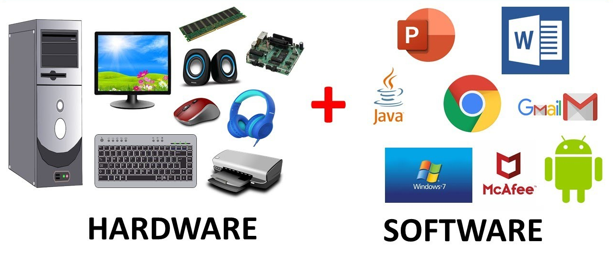

Het vak en de studie informatica houden zich bezig met bestuderen en maken van codes om voornamelijk problemen op te lossen. Bij het vak informatica op de middelbare school leer je hoe je een website maakt, codeert, programmeert en nog veel meer. Informatica kom je tegenwoordig steeds meer tegen, door de ontwikkeling van de technologie in ons tijdperk, je zult in de toekomst bijvoorbeeld ook robots tegen komen die zijn geprogrammeerd codes die je leert bij informatica. Informatica hoef je niet alleen toe te passen voor het vak zelf, maar kan ook gebruikt worden in bijvoorbeeld bedrijven en in de maatschappij.
Invoer en uitvoer zijn de basis van het opnemen en afgeven van informatie op een computer, informatie te verwerken en verbindingen tussen externe bronnen. De invoer is de manier hoe de informatie in het systeem komt, er zijn 2 manieren om dat te doen:
Hardware-invoer: Zoals een muis, toetsenbord of USB-stick.
Software-invoer: Zoals het downloaden van een app of bestand via het internet.
In de verwerkingsfase tussen de invoer van de hardware en software, en uitvoer, wordt alle binnengekomen informatie uit de software omgezet in informatie in de computer die hij kan gaan verwerken tot bruikbare onderdelen in het informatiesysteem. Er zijn verschillende manieren om deze handelingen uit te voeren:
> Er worden wiskundige berekeningen uitgevoerd
> Er worden gegevens geanalyseerd
> Tijdelijke of permanente opslag van databases of bestanden wordt uitgevoerd.
Uitvoer is belangrijk voor de overzet van van de verwerkte informatie naar externe bronnen of -bestanden. Er zijn 3 verschillende vormen van uitvoer:
> Visuele uitvoer: dit laat bijvoorbeeld grafieken en diagrammen zien op je scherm.
> Papieren uitvoer: het uitprinten of kopiëren van bestanden, afbeeldingen of andere informatie.
> Audio-uitvoer: uitvoer via koptelefoons of luidsprekers.